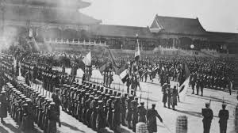
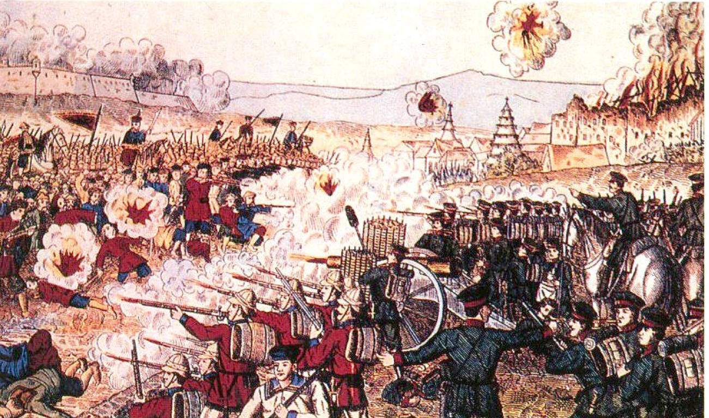

Background
In 1900, a Chinese group known as the Militia United in Righteousness (called boxers in English) started an uprising against the growing spheres of influence in China (France, UK, Germany, Russia, Japan). The Open Door Policy was also in effect, allowing for even more countries to spread in China.
US Involvement and Aftermath
The US, allied to the Spheres but not one of them, joined the fight. They helped to quickly put down the Boxers and signed the Boxer Rebellion which called for executions of Chinese officals who assisted the Boxers and $330M dollars (~$10B today) in war repartions.
